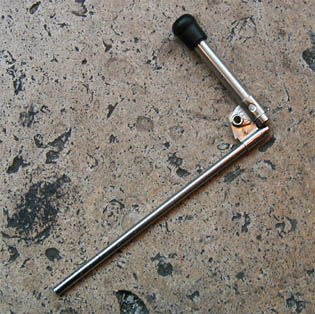

Alcools
L'une de ses caractéristiques est d'agir profondément
sur les substances
protéiques (voir
gélatines),
mais aussi d'autoriser d'innombrables techniques de peinture, de
sculpture, de teinture (voir
orcanette),
de dorure, etc.
Il se marie bien, chimiquement parlant, avec l'eau,
mais aussi avec l'huile, ce qui fait de lui un agent
émulsifiant,
dans certaines utilisations.
Au point de vue de la peinture et autres disciplines plastiques, il est un
diluant merveilleux
pour certains produits divers (laques, fixatifs, etc.) car il
autorise une homogénéité remarquable et un séchage aussi rapide
qu'intégral - lorsqu'il est pur. En
peinture à l'huile, son emploi est extrêmement restreint, pratiquement
limité à la restauration (voir ci-dessous
Projection
d'éthanol).
Pour information, on
ajoutera qu'il ne gèle
qu'à -114,1°C. Il s'évapore beaucoup
plus vite que l'eau (tension de vapeur
5,866 kPa contre 2,3378 pour l'eau, à 20°C.
Il entre en ébullition à 78,5°C.
(source Reptox)
Sa décomposition thermique donne
essentiellement du monoxyde et du dioxyde
de carbone (pour l'éthanol pur).
Différents
types
d'alcools, emplois
A notre connaissance, seul
l'alcool éthylique (esprit-de-vin ou éthanol, C2H6O
- éthane oxydé -,
principe de l'alcool commun) le plus proche possible des 100% peut être employé comme diluant correct pour les
procédés requièrant l'emploi d'alcool (peinture, arts plastiques, teinture,
restauration, décoration
et ébénisterie). L'alcool à 90% pourrait être trop impur pour ces procédés.
A part
dans l'industrie alimentaire, l'éthanol est toujours associé à 5% de dénaturants à cause de dispositions légales.
Sur le marché, on ne peut donc trouver que des alcools éthyliques à 95%
environ, impropres à
la consommation, dénaturés, qui contiennent souvent une petite
quantité de méthanol. Ils sont parfois nommés alcools à vernir
et sont notamment vendus dans les magasins de fournitures en ébénisterie.
L'éthanol est aussi un dissolvant radical des peintures protéiques (voir colles
utilisées comme liants), notamment des gélatines.
Mentionnons aussi,
au chapitre des alcools,

*
la peinture au vin rouge.
Toute
expérience de la conservation à moyen terme et long terme de tableaux
peints avec du vin nous intéresse. Son odeur au
séchage - qui doit être effectué en plein soleil, paraît-il - peut rebuter
certains.
Voir lie, marc, moût,
noir de lie de vin
calcinée et noir de vin. Lire également
l'article du glossaire consacré au vin.
*
le vin blanc et le
vinaigre comme adjuvants assez utilisés pour la
tempera à l'oeuf.
*
le méthanol est traité dans un article séparé
*
l'alcool
à brûler, mélange de 90% d'éthanol avec 5 à 10% de méthanol. Ce n'est
pas un très bon diluant, mais un nettoyant assez intéressant (lire l'article
dédié)
*
l'alcool isopropylique (CH3CHOHCH3,
soit C3H8O),
dit propanol.
Présent dans différents produits solvants ou diluants, notamment certaines
encres, il est surtout employé dans l'industrie pour purifier des produits
naturels (huiles, gommes, latex, etc.), pour fabriquer des parfums, comme
antiseptique pour les cosmétiques, en médecine (frictions), etc.
*
les
polyalcools.
Les plus employés sont le glycol et la glycérine.
En tant qu'additifs, ils jouent notamment le rôle d'assouplissants et parfois
de retardateurs de séchage. L'éthanol simple est un monoalcool (lire
absolument l'article alcool du glossaire).
*
les alcools et polyalcools sont extrêmement
présents dans les produits employés dans les arts plastiques (huiles à
peindre, acrylique, laque de
Coromandel, feutres, colles, etc.), la plupart des produits liants étant des esters.
Nocivité
L'alcool éthylique banal est nocif mais non toxique. En fait, il est
surtout dangereux par la suite d'ingestion. Les conséquences de son
utilisation prolongée sont bien connues : narcoses, lésions du foie et du
cerveau, etc. Bien entendu, la pureté du produit et la nature des impuretés
déterminent aussi le degré de nocivité puisque les dénaturants ont eux-mêmes
leur nocivité.
L'éthanol sent fort - sans être vraiment infect - et est assez inflammable.
On ne signale pas de nocivité
spécifique en ce qui concerne le glycol pur. Nous manquons de données
concernant ce produit (à bien distinguer du tristement célèbre
éther de
glycol).

Projection
d'éthanol
En peinture à l'huile et surtout en restauration, l'éthanol peut être utilisé
pour déposer un produit pur (une résine, par exemple) sur la surface du tableau,
par projection ou brossage doux, mettant à profit son évaporation rapide et
intégrale.
Certaines peintures - notamment sur tissus - sont réalisées par projection
à l'aide d'alcool (alcool + liant/mordant +
pigment). D'autres, à base de gomme
laque,
autorisent aussi ce type d'application.
On trouve également de l'alcool éthylique dans les fixatifs.
Pour projeter les produits alcoolisés sur une
surface, on utilise généralement une soufflette
(voir photo ci-dessus) ou tout autre outil de la même famille.
Réactions chimiques
L'alcool a la propriété de créer des esters
et de l'eau en présence de substances acides, mais ne saurait
cependant être
considéré comme neutralisant total et définitif de n'importe quel acide (voir saponification).
Il est parfois employé pour créer des effets dans les techniques
mixtes et la saponification/estérification de la surface peut effectivement donner des résultats
intéressants, notamment
si les esters obtenus sont stables.
Retour
début de page